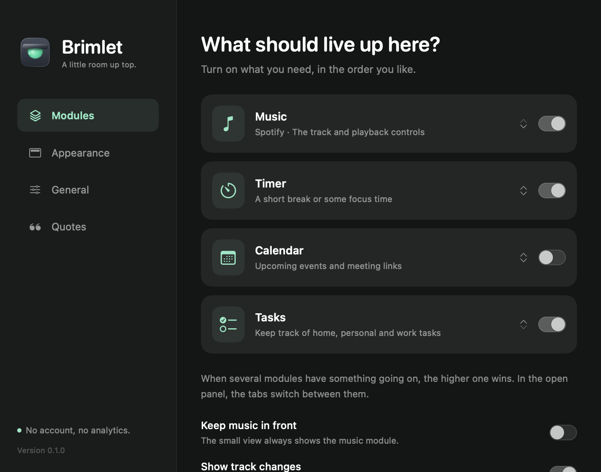
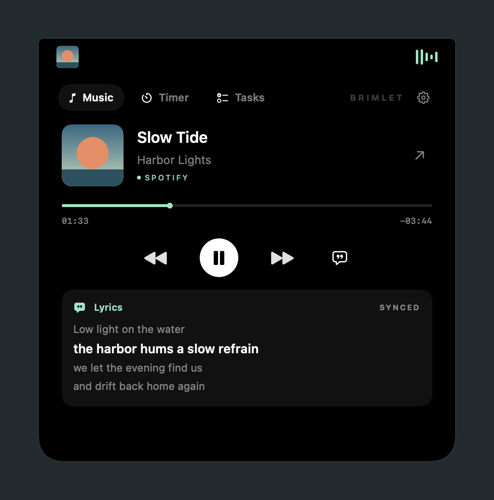
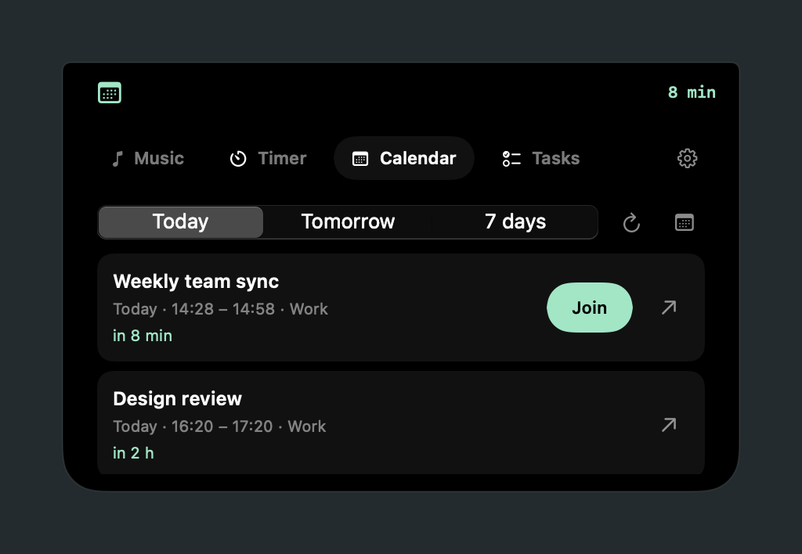
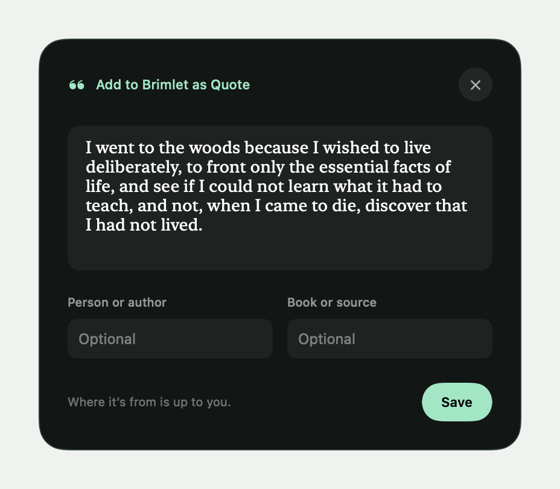

Ein Einstellungsfenster, das nicht nach Mac aussieht
700 × 550 pt fest, 205-pt-Seitenleiste, immer dunkel. Überschriften wie „What should live up here?“ in 24 pt gerundeter Schrift sprechen wie eine Website. Modulkarten mit 38 × 42-pt-Kacheln nehmen viel Raum für wenig Inhalt.
Die Seite „Modules“ macht sechs Dinge
Module und Reihenfolge, drei Verhaltensschalter, Spotify-Verbindung, Kalender (nur wenn eingeschaltet, mitten in der Seite), fremde Apps, cmux und drei Fußnoten – alles in einer langen Scrollfläche. Wer den Kalender einrichten will, sucht ihn zwischen Spotify und fremden Apps.

Zu kleine, zu blasse Texte
51 Stellen im Code setzen 8–10 pt, die meisten für Text: „SPOTIFY“ und „SYNCED“ in 8 pt Versalien, Zeiten 9 pt Monospace, Aufgaben-Meta 9 pt, Filterchips 9 pt, „Version 0.1.0“ 9 pt in Tertiärgrau, Hilfetexte 10 pt in Sekundärgrau.

Mint überall heißt Mint nirgends
Im Kalender stehen Symbol, Countdown, „in 8 min“, „in 2 h“ und „Join“ gleichzeitig in Mint. Ebenso Navigation, Modulsymbole, Zeitleiste, Ring, Links, Etiketten und der Rand der Zitatkarte. Es bleibt kein Signal für das Wichtige.

Vier Oberflächen, vier Dialekte
Insel schwarz, Einstellungen #131616, Aufgabenblatt #131616 mit gerundetem 18-pt-Titel, Zitatkarte #111614 mit Mint-Rand. Radien 9, 10, 12, 13, 22, 24; drei Tastenarten (Mint-Kapsel, weißer Kreis, schlichte Textknöpfe).

Das Logo hat Material, die Oberfläche nicht
Das Logo zeigt matten Graphit, Glas mit Licht und eine kühle Platte. Die Oberfläche nutzt davon nur ein flaches Pastell-Mint (#8CE8C4). Graphit, Glas und Platte fehlen.